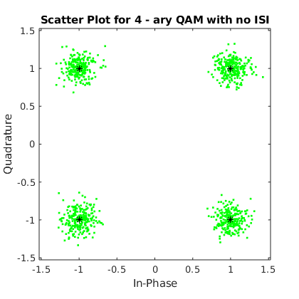
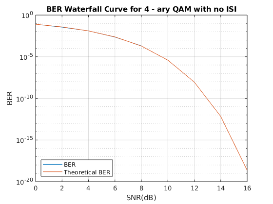
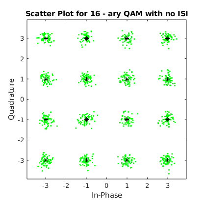
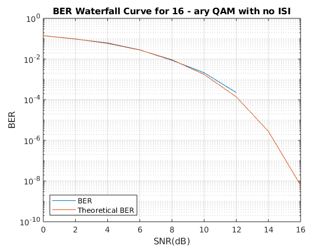

Contents
ECE408 Wireless Communications
Armaan Kohli Spring 2020 Project 1
clear all; close all; clc;
Part 1: QAM Simulation w/ No Channel
numIter = 10; % The number of iterations of the monte-carlo simulation nSym = 1000; % The number of symbols per packet SNR_Vec = 0:2:16; lenSNR = length(SNR_Vec); M = [4, 16]; % The M-ary number chan = 1; % No channel % Create a vector to store the BER computed during each iteration berVec = zeros(numIter, lenSNR); % Run the simulation numIter amount of times for both 4-ary and 16-ary QAM for m = M for ii = 1:numIter K = log2(m); % bits per symbol % Generating random bits to send bits = randi(2,[nSym*K, 1])-1; % Reshape bits into K-tuples data = reshape(bits,length(bits)/K,K); msg = bi2de(data); for jj = 1:lenSNR % One iteration of the simulation at each SNR tx = qammod(msg,m); % QAM modulate the signal txChan = tx; % Perfect channel - introduces no ISI % Convert from EbNo to SNR and add AWGN txNoisy = awgn(txChan,(10*log10(K) + SNR_Vec(jj)),'measured'); rx = qamdemod(txNoisy,m); % Demodulate % Converting symbols back to bits rxMSG = de2bi(rx,K); rxMSG = rxMSG(:); % Compute and store the BER for this iteration [~, berVec(ii,jj)] = biterr(bits, rxMSG); end % End SNR iteration end % End numIter iteration % Generate plots for each M-ary scheme % Generate scatterplot title1 = sprintf("Scatter Plot for %d - ary QAM with no ISI",m); sPlotFig = scatterplot(txNoisy,1,0,'g.'); hold on; figure; scatterplot(tx,1,0,'k*',sPlotFig) hold off; title(title1) % Compute and plot the mean BER ber = mean(berVec,1); figure; semilogy(SNR_Vec,ber) grid on; % Compute the theoretical BER for this scenario and graph waterfall berTheory = berawgn(SNR_Vec, 'qam', m); % theoretical BER title2 = sprintf("BER Waterfall Curve for %d - ary QAM with no ISI",m); hold on; semilogy(SNR_Vec, berTheory) xlabel('SNR(dB)'); ylabel('BER'); legend('BER','Theoretical BER','Location','southwest') hold off; title(title2) end % End M-ary iteration   